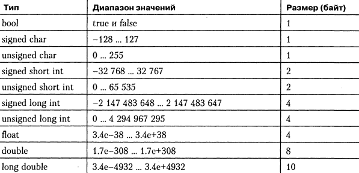
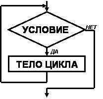
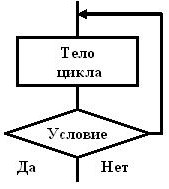

Перечислите основные концепции языков программирования (переменная, цикл, функция, процедура, метод, объект, класс и т.д.)
Переменные
Переменная - это именованный участок памяти, в котором хранится значение, которое может быть изменено программой. Все
переменные перед их использованием должны быть объявлены. Общая форма объявления[1] имеет такой вид:
тип список_переменных;
Примеры объявления переменных:
var A,B,C:integer; (Pascal)
variable sum : integer := 0;(VHDL)
Каждая переменная имеет тип.
Типы данных в C

Переменной можно присваивать значения этого типа. Числовой переменной нельзя присвоить строку и наоборот.
Переменные по месту определения и области видимости делятся на:
- Локальные
- Глобальные
- Формальные параметры функции
Локальные переменные
Объявляются внутри блоков (функций / циклов и т.д.). Блок программы - описания и инструкции, объединенные в одну конструкцию фигурными скобками. Локальная переменная невидима за пределами своего блока.
void func1() {
int x;
x = 10;
}
При выходе из функции переменная будет разрушена. переменная, объявленная в одном блоке, не имеет никакого отношения к переменной с тем же именем, объявленной в другом блоке.
Глобальные переменные
Видимы и могут использоваться в любом месте программы (в пределах модуля). Они сохраняют свое значение на протяжении всей работы программы. Объявлять глобальные переменные рекомендуется в верхней части программы.
#include <stdio.h>
int count; // глобальная переменная count
void func1(void);
void func2(void);
int main(void) {
count = 100;
func1();
return 0;
}
Если локальная и глобальная переменные имеют одно и то же имя, то при обращении к ней внутри блока, в котором объявлена локальная переменная, используется локальная переменная, и на глобальную переменную это никак не влияет.
Рекомендуется избегать излишнего использования глобальных переменных т.к.:
- они занимают память в течение всего времени выполнения программы, а не только тогда, когда они необходимы.
- функция становится менее универсальной, потому что в этом случае функция использует нечто, определенное вне ее (side-effects).
- при увеличении размера программы серьезной проблемой становится случайное изменение значения переменной где-то в другой части программы.
Формальные параметры функции
Если функция имеет аргументы, значит должны быть объявлены переменные, которые примут их значения. Эти переменные называются формальными параметрами функции. Внутри функции они фигурируют как обычные локальные переменные.
void deleteAfterIndex(int index) { // index – параметр функции
int nextIndex=mass[mass[index].next].next;
mass[mass[index].next].next=-3; // массив класса
mass[index].next=nextIndex;
}
Цикл
Цикл - любая многократно исполняемая последовательность инструкций, организованная любым способом например, с помощью условного перехода.
Последовательность инструкций, предназначенная для многократного исполнения, называется телом цикла. Единичное выполнение тела цикла называется итерацией.
Исполнение любого цикла включает первоначальную инициализацию переменных цикла, проверку условия выхода, исполнение тела цикла и обновление переменной цикла на каждой итерации. Кроме того, большинство языков программирования предоставляют средства для досрочного управления циклом, например, операторы завершения цикла, то есть выхода из цикла независимо от истинности условия выхода (в языке Си - break) и операторы пропуска итерации (в языке Си - continue).
Виды циклов:
- Цикл с предусловием
- Цикл с постусловием
- Цикл со счётчиком
Цикл с предусловием
Цикл с
предусловием - цикл, который выполняется пока истинно некоторое условие, указанное перед его началом.
Это условие проверяется до выполнения тела цикла, поэтому тело может быть не выполнено ни разу (если условие с
самого начала ложно).
int i(0);
while (i<15) {
i++;
cout << i << endl; // <тело цикла>
}
Цикл с постусловием
Цикл с постусловием - цикл, в котором условие проверяется после выполнения тела цикла. Отсюда следует, что тело всегда выполняется хотя бы один раз.
int i(0);
do {
i++;// <тело цикла>
} while(i<15);
Цикл со счётчиком
Цикл со счётчиком - цикл, в котором некоторая переменная изменяет своё значение от
заданного начального значения до конечного значения с некоторым шагом, и для каждого значения этой переменной тело
цикла выполняется один раз. В большинстве процедурных языков программирования реализуется оператором for.
for (i = 0; i < 10; ++i)
{
cout<<i<<endl;// тело цикла
}
Вложенные циклы
Существует возможность организовать цикл внутри тела другого цикла. Такой цикл будет называться вложенным
циклом. Вложенный цикл по отношению к циклу в тело которого он вложен будет именоваться внутренним циклом, и
наоборот цикл в теле которого существует вложенный цикл будет именоваться внешним по отношению к
вложенному. Внутри вложенного цикла в свою очередь может быть вложен еще один цикл, образуя следующий уровень
вложенности и так далее. Количество уровней вложенности, как правило, не ограничивается.
Пример на Си: (вычисление определителя матрицы методом Гаусса)
int i(0), j(0), k(0), x[row1][col1], y[row2][col2], z[row1][col2];
for (i = 0; i<row1;i++){
for (j = 0;j<col2; j++){
z[i][j]=0;
for (k=0;k<col1; k++){
z[i][j] = z[i][j] + x[i][k]*y[k][j];
}
}
}
Функции
Функция - это совокупность объявлений и операторов, обычно предназначенная для решения определенной задачи. Функция
может принимать параметры и возвращать значение некоторого типа.
Функция может также не возвращать никаких значений (процедура), для этого ее тип должен быть void, может не
принимать значений, тогда список параметров должен отсутствовать.
Определение функции имеет следующую форму:
[спецификатор-типа] имя-функции(список-формальных-параметров)
{
тело-функции
}
Пример на Си:
#include <iostream>
using namespace std;
int sum(int a, int b); // объявление функции, ее можно сразу же описать
int main() {
int a = 2, b = 3, c, d;
c = sum(a, b); // вызов функции
cin >> d;
cout << sum(c, d); // вызов функции
return 0;
}
//тип функции- int, это значит что функция должна возвратить значение типа int
int sum(int a, int b) { // определение функции
return (a + b);
}
Виды передачи величин в функцию
Существует два вида передачи величин в функцию: по значению и по адресу.
При передаче по значению в стек заносятся копии значений фактических параметров, и операторы функции
работают с этими копиями. Доступа к исходным значениям параметров у функции нет, а, следовательно, нет и возможности
их изменить.
При передаче по адресу в стек заносятся копии адресов параметров, а функция осуществляет доступ к ячейкам
памяти по этим адресам и может изменить исходные значения параметров:
#include <iostream>
using namespace std;
void f(int i, int* j, int& k);
int main() {
int i = 1, j = 2, k = 3;
cout << "i j k\n";
cout << i << ' ' << j << ' ' << k << '\n';
f(i, &j, k);
cout << i << ' ' << j << ' ' << k;
return 0;
}
void f(int i, int* j, int& k) {
i++;
(*j)++;
k++;
}
Результат работы программы:
i j k
1 2 3
1 3 4
Процедуры
Процедура - понятие, которое используется в большинстве языков программирования высокого уровня, и соответствует
значению подпрограмма. Процедура – функция, не возвращающая значение.
В языке Си процедуре соответствует функция с типом void. Поэтому си-разработчики не подозревают о существовании
такого термина. Однако процедуры широко используются в языке Pascal.
Формат описания процедуры имеет вид:
procedure имя процедуры (формальные параметры);
раздел описаний процедуры
begin
исполняемая часть процедуры
end;
Пример на Pascal:
procedure MaxNumber(a,b: integer; var max: integer);
begin
if a>b then max:=a else max:=b;
end;
Класс
Класс — это тип, описывающий устройство объектов. Понятие «класс» подразумевает некоторое поведение и способ
представления. Понятие «объект» подразумевает нечто, что обладает определённым поведением и способом представления.
Говорят, что объект — это экземпляр класса. Класс можно сравнить с чертежом, согласно которому создаются объекты.
Обычно классы разрабатывают таким образом, чтобы их объекты соответствовали объектам предметной области.
Классы в С++ - это абстракция описывающая методы, свойства, ещё не существующих объектов. Объекты -
конкретное представление абстракции, имеющее свои свойства и методы. Созданные объекты на основе одного класса
называются экземплярами этого класса. Эти объекты могут иметь различное поведение, свойства, но все равно будут
являться объектами одного класса.
Три основных принципа построения классов
- Инкапсуляция - это свойство, позволяющее объединить в классе и данные, и методы, работающие с ними и скрыть детали реализации от пользователя.
- Наследование - это свойство, позволяющее создать новый класс-потомок на основе уже существующего, при этом все характеристики класса родителя присваиваются классу-потомку.
- Полиморфизм - свойство классов, позволяющее использовать объекты классов с одинаковым интерфейсом без информации о типе и внутренней структуре объекта.
Структуру объявления классов
// объявление классов в С++
class /*имя класса*/
{
private:
/* список свойств и методов для использования внутри класса */
public:
/* список методов доступных другим функциям и объектам программы */
protected:
/*список средств, доступных при наследовании*/
};
#include <iostream>
using namespace std;
// начало объявления класса
class mouse_4tech // имя класса
{
public: // спецификатор доступа
void who_i_am() // функция (метод класса) выводящая сообщение на экран
{
cout << "I’m mouse A4tech\n";
}
}; // конец объявления класса
int main()
{
mouse_4tech obj1; // объявление объекта
obj1.who_i_am (); // вызов функции класса message
system("pause");
return 0;
}
Объект
Объект — некоторая сущность в виртуальном пространстве, обладающая определённым состоянием и поведением,
имеющая заданные значения свойств (атрибутов) и операций над ними (методов). Как правило, при рассмотрении объектов
выделяется то, что объекты принадлежат одному или нескольким классам, которые определяют поведение (являются
моделью) объекта. Термины «экземпляр класса» и «объект» взаимозаменяемы.
Каждый объект определяется с помощью класса. Класс описывает переменные, свойства, процедуры и события
объекта. Объекты представляют собой экземпляры классов; после того как класс определен, можно создать любое
количество объектов.
Хорошим примером связи между объектом и классом является форма для печенья и само печенье. Форма для печенья —
это класс. Он определяет характеристики каждого печенья, например размер и форму. Класс используется для
создания объектов. В нашем примере объект — это печенье.
Пример:
// Создание экземпляра класса ArrayList с именем list
ArrayList list = new ArrayList();
Метод
Метод в (ООП) — это функция или процедура, принадлежащая какому-то классу или объекту
и имеющая некоторое количество операторов для выполнения какого-то действия, а также набор входных
аргументов и возвращаемое значение (могут отсутствовать).
Различают простые методы и статические методы (методы класса):
- простые методы имеют доступ к данным объекта (конкретного экземпляра данного класса),
- статические методы не имеют доступа к данным объекта и для их использования не нужно создавать экземпляры (данного класса).
Методы предоставляют интерфейс, при помощи которого осуществляется доступ к данным объекта некоторого класса, тем
самым, обеспечивая инкапсуляцию данных.
В зависимости от того, какой уровень доступа предоставляет тот или иной метод, выделяют:
- открытый (public) интерфейс — общий интерфейс для всех пользователей данного класса;
- защищённый (protected) интерфейс — внутренний интерфейс для всех наследников данного класса;
- закрытый (private) интерфейс — интерфейс, доступный только изнутри данного класса.
Такое разделение интерфейсов позволяет сохранять неизменным открытый интерфейс, но изменять внутреннюю реализацию
Пример метода на Си++:
class Motorcycle
{
// доступ открыт всем, кто видит определение данного класса.
public void StartEngine() {/* Тело функции */ }
/* доступ открыт самому классу (т.е. функциям-членам данного класса) и друзьям (friend) данного класса, как
функциям, так и классам. */
protected void AddGas(int gallons) { /* Тело функции */ }
// доступ открыт классам, производным от данного.
private double GetTopSpeed{ /* Тело функции */ }
}
Показательный пример:
class some {
friend void f(some&); //дружественная функция
public:
int a_;
protected:
int b_;
private:
int c_;
};
void f(some& obj) {
obj.a_ = 0; // ok // доступ ко все переменным класса
obj.b_ = 0; // ok
obj.c_ = 0; // ok
}
void g(some& obj) {
obj.a_ = 0; // ok
obj.b_ = 0; /* CT error нет доступа т.к функция не принадлежит классу и не
дружественная*/
obj.c_ = 0; // CT error нет доступа т.к функция не принадлежит классу
}
class derived : public some {
derived() {
a_ = 0; // ok есть доступ т.к. a_ public
b_ = 0; // ok есть доступ т.к. b_ protected а класс derived наследник some
c_ = 0; // CT error нет доступа т.к. с_ private
}
};